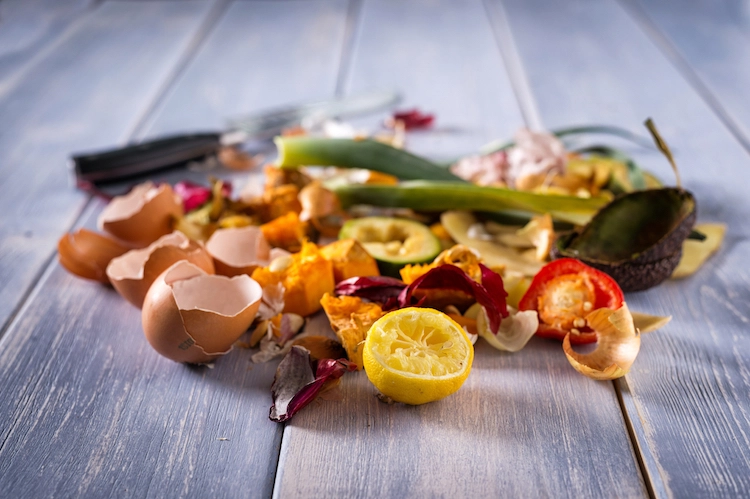
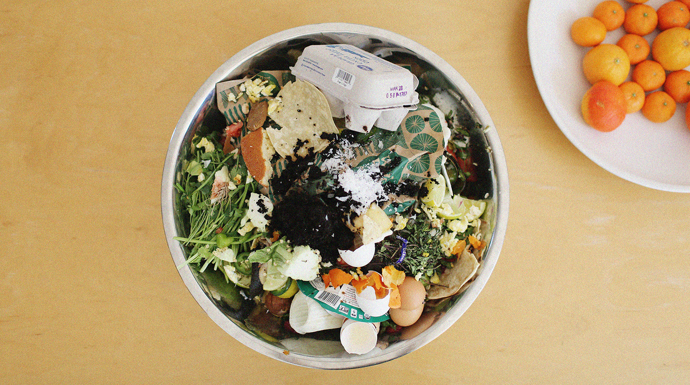

Urban Composting 101
Why Compost?

Composting is one of the very best ways to turn household waste products into nutrient rich soil/fertilizer for your garden.
Composting can remove 20-50% from your household waste, reducing the burden on landfills while replenishing your lawn, trees, houseplants, or garden, or urban garden for free.
How to Compost Inside
Best Things to Compost

There are a ton of household items that can be added to your compost.
Composting materials can come from your kitchen, bathroom, office, laundry room, around the house, or from your pets.
These items include:
fruit and vegetable scraps, egg shells (crushed), coffee grounds, coffee filters, tea bags, used facial tissues,
hair from hairbrush, nail clippings, shredded paper and envelopes, pencil shavings, "dust bunnies" and
contents of your dustpan,
fur from the dog or cat brush, feathers, dry dog or cat food, etc.